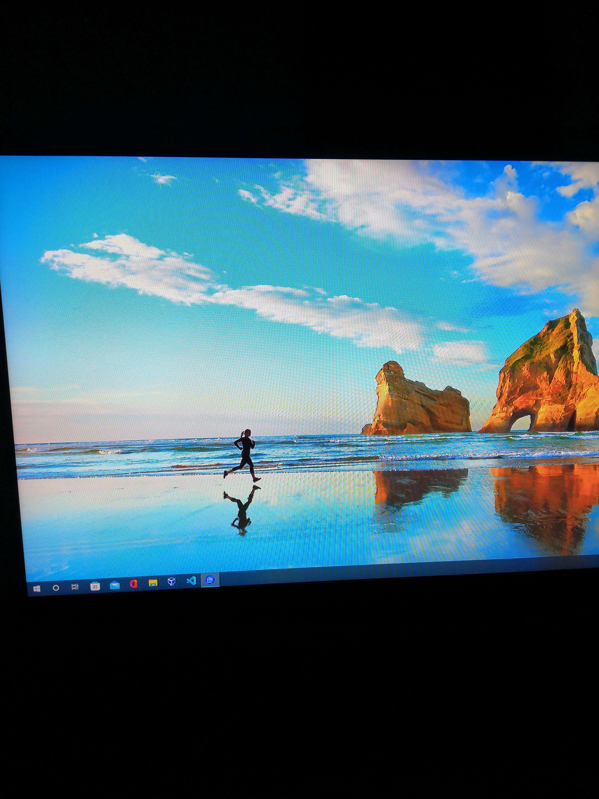

Computing Teamworking Project
The purpose of the teamworking project was to allow us to work collaboratively within a group to plan, design, implement, test, and evaluate a computing project. We had to produce a project in response to a project brief. The project had to be completed by a project team working together, but with each of us having defined areas of responsibility. The project allowed us the opportunity to demonstrate the knowledge and skills we have accumulated across the academic year. It also gave us the opportunity to further develop key skills in planning, decision making, working with others, communications, implementation, problem solving, time management, testing and evaluation.

